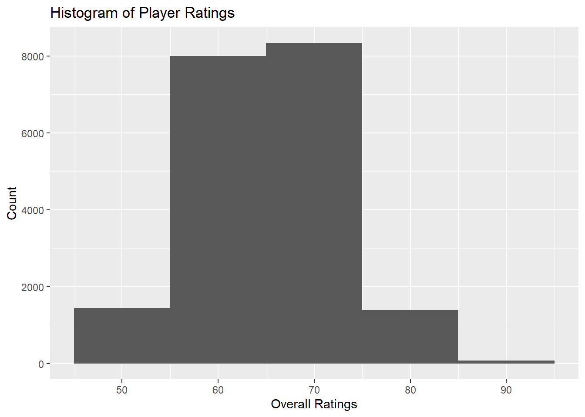
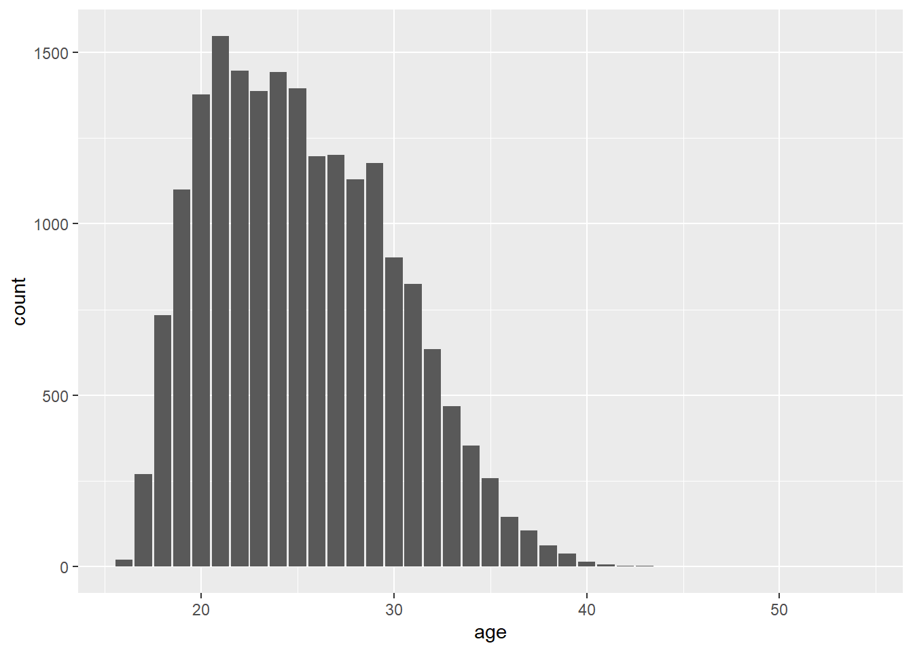
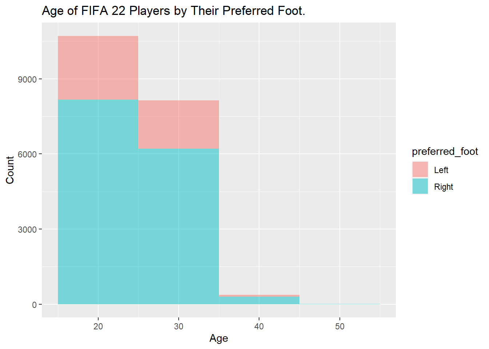
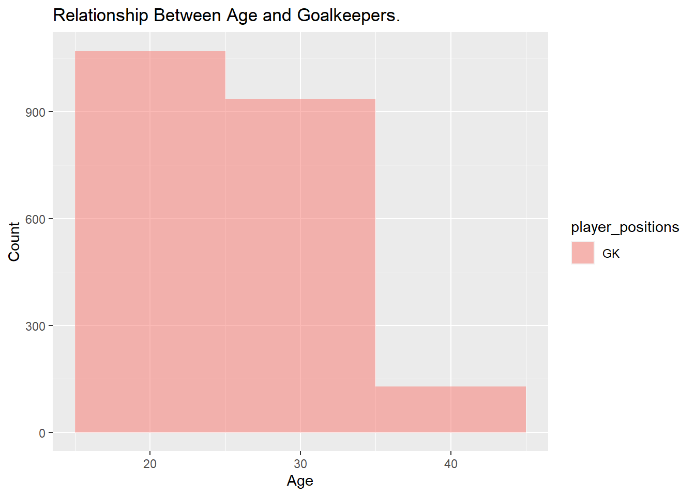
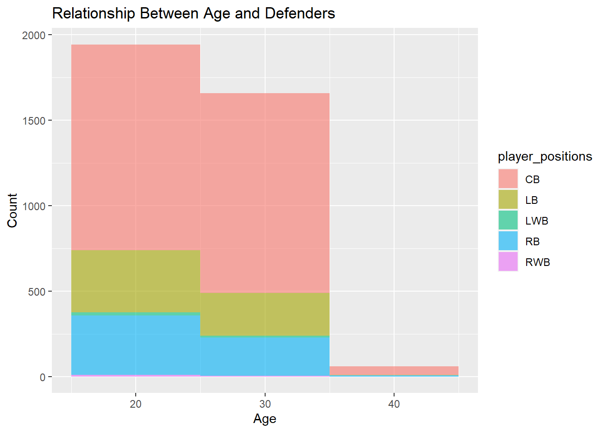
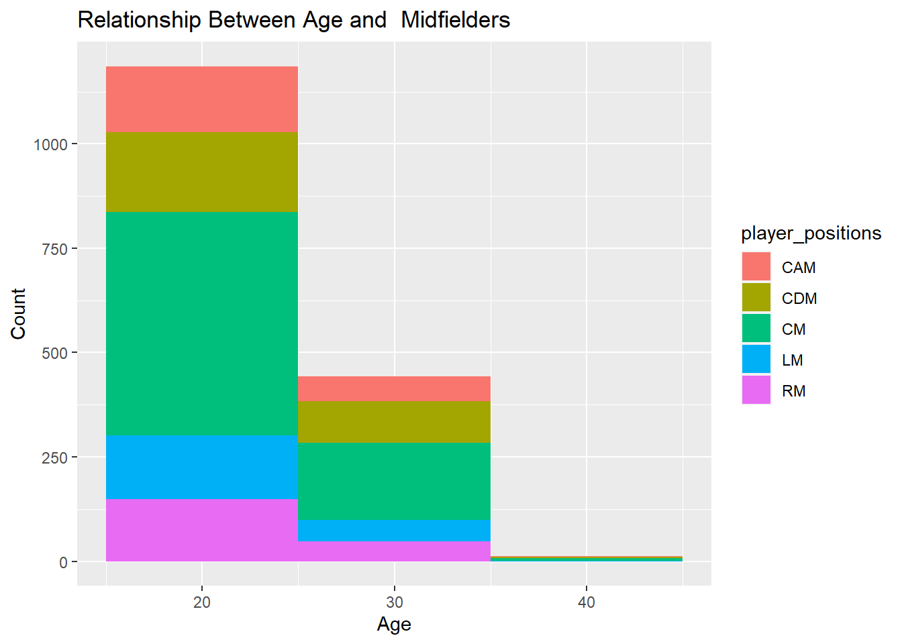
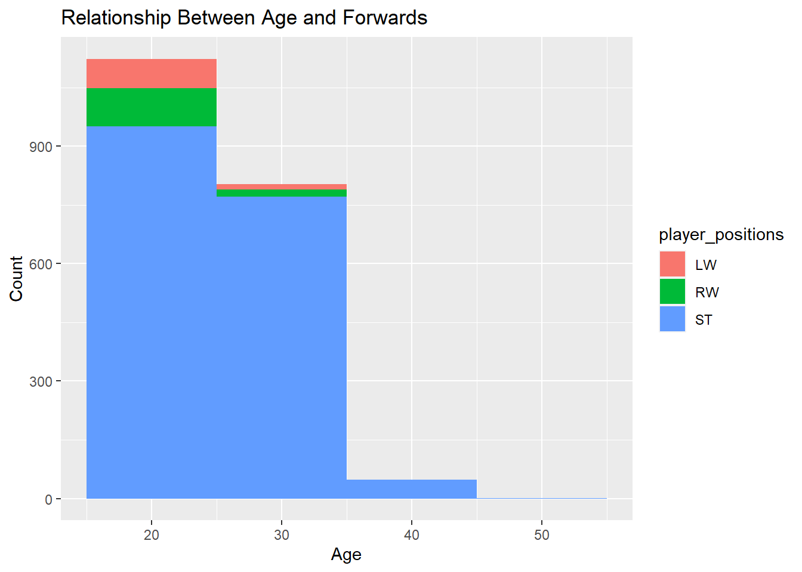
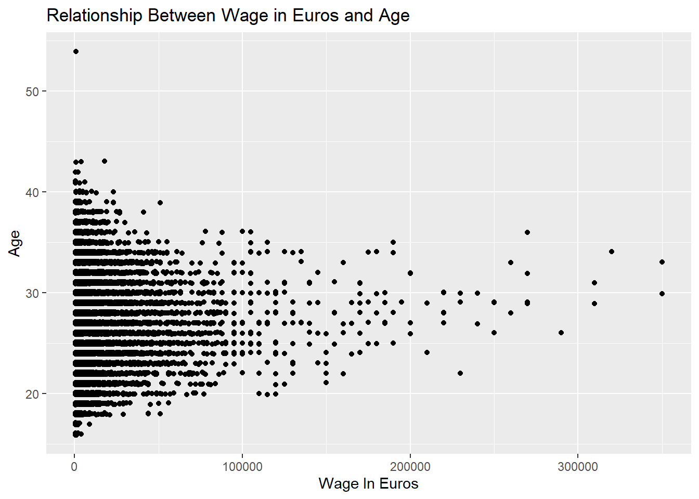
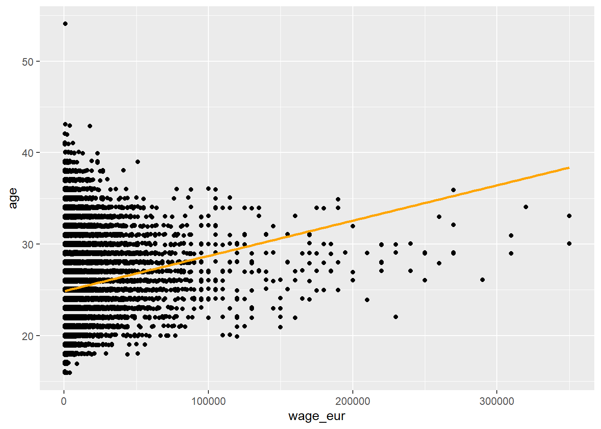

This is my analysis of the FIFA 2022 Data set. The dataset was found on sportsstatistics.com, a website created by Thomas Nielsen. The dataset was created on June 16, 2022. The data contains information about the video game FIFA 22.
#Loading in necessary libraries and removing unwanted messages. library(tidyverse)
#Loads in FIFA Dataset fifa <-read_csv(file ="data/players_22.csv")fifa
# A tibble: 19,239 × 110
sofif…¹ playe…² short…³ long_…⁴ playe…⁵ overall poten…⁶ value…⁷ wage_…⁸ age
<dbl> <chr> <chr> <chr> <chr> <dbl> <dbl> <dbl> <dbl> <dbl>
1 158023 https:… L. Mes… Lionel… RW, ST… 93 93 7.8 e7 320000 34
2 188545 https:… R. Lew… Robert… ST 92 92 1.20e8 270000 32
3 20801 https:… Cristi… Cristi… ST, LW 91 91 4.5 e7 270000 36
4 190871 https:… Neymar… Neymar… LW, CAM 91 91 1.29e8 270000 29
5 192985 https:… K. De … Kevin … CM, CAM 91 91 1.25e8 350000 30
6 200389 https:… J. Obl… Jan Ob… GK 91 93 1.12e8 130000 28
7 231747 https:… K. Mba… Kylian… ST, LW 91 95 1.94e8 230000 22
8 167495 https:… M. Neu… Manuel… GK 90 90 1.35e7 86000 35
9 192448 https:… M. ter… Marc-A… GK 90 92 9.9 e7 250000 29
10 202126 https:… H. Kane Harry … ST 90 90 1.30e8 240000 27
# … with 19,229 more rows, 100 more variables: dob <date>, height_cm <dbl>,
# weight_kg <dbl>, club_team_id <dbl>, club_name <chr>, league_name <chr>,
# league_level <dbl>, club_position <chr>, club_jersey_number <dbl>,
# club_loaned_from <chr>, club_joined <date>,
# club_contract_valid_until <dbl>, nationality_id <dbl>,
# nationality_name <chr>, nation_team_id <dbl>, nation_position <chr>,
# nation_jersey_number <dbl>, preferred_foot <chr>, weak_foot <dbl>, …
#Checking number of rows and columns in the datasetnrow(fifa)
[1] 19239
ncol(fifa)
[1] 110
There are 19,239 rows in this dataset, and there are 110 columns in this dataset.
#Histogram of player ratings ggplot(fifa, aes(x = overall)) +geom_histogram(binwidth =10,alpha =1) +labs(x ="Overall Ratings",y ="Count",title ="Histogram of Player Ratings")

It seems like most players in this FIFA dataset are between 65-75 overall.
#Barplot of players' ages ggplot(fifa, aes(x = age)) +geom_bar()

It seems like most players in this data set are between 20-30 years old.
# mean average rating for fifa players in this dataset. fifa %>%summarise(mean_ratings =mean(overall))
# A tibble: 1 × 1
mean_ratings
<dbl>
1 65.8
The average rating of players in this dataset is around 65 overall.
#Counting the number of names in FIFAfifa %>%count(short_name, sort =TRUE)
# A tibble: 18,145 × 2
short_name n
<chr> <int>
1 J. Rodríguez 13
2 J. Hernández 9
3 J. Brown 8
4 Paulinho 8
5 J. García 7
6 J. González 7
7 L. Rodríguez 7
8 M. Smith 7
9 A. Rodríguez 6
10 J. Clarke 6
# … with 18,135 more rows
It seems like the most common name is J. Rodriguez.
#Checking who is the oldest player in the FIFA datasetfifa %>%group_by(short_name) %>%count(age, sort =TRUE) %>%arrange(desc(age))
# A tibble: 19,144 × 3
# Groups: short_name [18,145]
short_name age n
<chr> <dbl> <int>
1 K. Miura 54 1
2 C. Lucchetti 43 1
3 G. Buffon 43 1
4 S. Nakamura 43 1
5 D. Vaca 42 1
6 K. Ellison 42 1
7 A. Boruc 41 1
8 J. Pinto 41 1
9 K. Stamatopoulos 41 1
10 P. Da Silva 41 1
# … with 19,134 more rows
Not surprisingly, the oldest player in FIFA 22 is Miura, who is 54 years old.
#Age of FIFA 22 players by their preferred foot. ggplot(fifa, aes(x = age,fill = preferred_foot)) +geom_histogram(binwidth =10,alpha =0.5) +labs(x ="Age",y ="Count",title ="Age of FIFA 22 Players by Their Preferred Foot.")

In this data set, it seems that most players are right footed.
#Finding out relationship between age and position#Goalkeepersfifa%>%filter(player_positions =="GK") %>%ggplot(aes(x = age,fill = player_positions)) +geom_histogram(binwidth =10,alpha =0.5) +labs(x ="Age",y ="Count",title ="Relationship Between Age and Goalkeepers.")

#Defendersfifa %>%filter(player_positions =="CB"| player_positions =="RB"| player_positions =="LB"| player_positions =="RWB"| player_positions =="LWB") %>%ggplot(aes(x = age,fill = player_positions)) +geom_histogram(binwidth =10,alpha =0.6) +labs(x ="Age",y ="Count",title ="Relationship Between Age and Defenders")

#Central Midfieldersfifa %>%filter(player_positions =="CM"| player_positions =="CDM"| player_positions =="CAM"| player_positions =="RM"| player_positions =="LM") %>%ggplot(aes(x = age,fill = player_positions)) +geom_histogram(binwidth =10,alpha =3.9) +labs(x ="Age",y ="Count",title ="Relationship Between Age and Midfielders")

#Forwardsfifa %>%filter(player_positions =="LW"| player_positions =="RW"| player_positions =="ST") %>%ggplot(aes(x = age,fill = player_positions)) +geom_histogram(binwidth =10,alpha =4.9) +labs(x ="Age",y ="Count",title ="Relationship Between Age and Forwards")

It looks like the most common position for 35-45 years old is Goalkeeper. Most players by position seem to be between 15-25 years old. In this dataset, the most common defender position is center back. The most common midfield position seems to be central midfielder. The most common forward position seems to be striker.
#Finding relationship between wage in Euros and age. ggplot(fifa, aes(x = wage_eur, y = age)) +geom_jitter(width =0.1, height =0.1) +labs(x ="Wage In Euros",y ="Age",title ="Relationship Between Wage in Euros and Age")

It seems like most data points are on the left of the graph, for most players in this FIFA dataset are earning between 0-100,000 Euros per week.
#Fitting linear model to predict wage in euros by age. wage_age_fit <-linear_reg() %>%set_engine("lm") %>%fit(wage_eur ~ age, data = fifa) %>%tidy()estimate1 <- wage_age_fit$estimate[1]estimate2 <- wage_age_fit$estimate[2]
The estimated linear model is \(wage in euros = -7367.1140362 + 650.1723807\times age\)
#Jitterplot with a regression line. ggplot(fifa, aes(x = wage_eur, y = age)) +geom_jitter(width =0.1, height =0.1) +geom_smooth(method ="lm", se =FALSE, color ="orange")

All else held constant, for each additional euro, the age would increase, on average, by 650 years. This does not make sense in context.